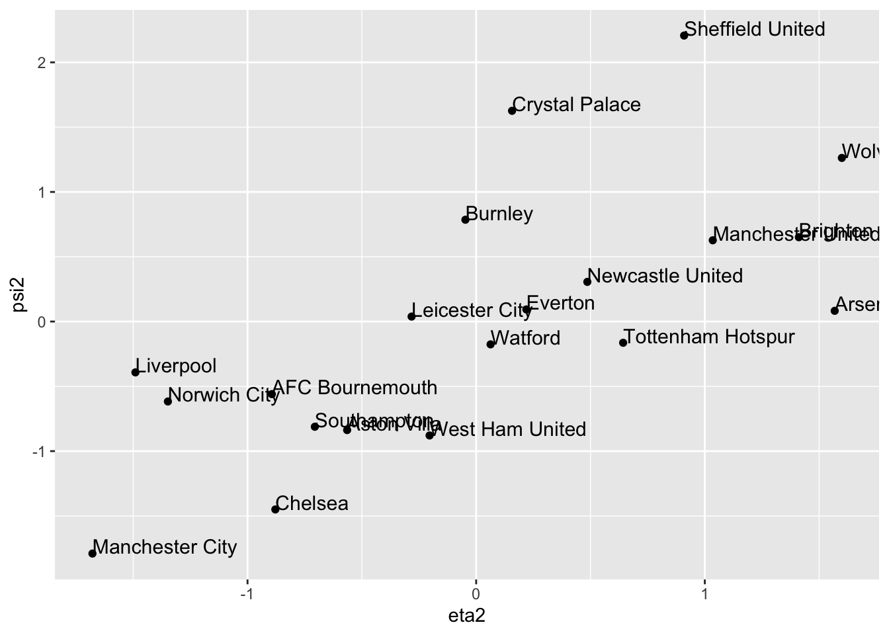

1.1 The first pair of canonical variables
Some notation
Assume we are given a random sample of vectors \(\mathbf x_i, \mathbf y_i\), and that we stack these into a vector \(\mathbf z_i\) \[ \mathbf z_i=\left(\begin{array}{c} \mathbf x_i\\ \mathbf y_i \end{array}\right)=(\mathbf x_i^\top , \mathbf y_i^\top )^\top,\quad i=1,\ldots, n, \] where the \(\mathbf x_i\) are \(p \times 1\), the \(\mathbf y_i\) are \(q \times 1\) and, consequently, the \(\mathbf z_i\) are \((p+q)\times 1\). We are interested in determining the strength of linear association between the \(\mathbf x_i\) vectors and the \(\mathbf y_i\) vectors. We formulate this task as an optimisation problem (cf. PCA).
First, some notation:
Let \(\bar{\mathbf x}\), \(\bar{\mathbf y}\), and \(\bar{\mathbf z}\) denote the sample mean vectors of the \(\mathbf x_i\), \(\mathbf y_i\) and \(\mathbf z_i\) respectively.
Let \(\mathbf S_{\mathbf z\mathbf z}\) denote the sample covariance matrix of the \(\mathbf z_i\), \(i=1,\ldots, n\). Then \(\mathbf S_{\mathbf z\mathbf z}\) can be written in block matrix form \[ \mathbf S_{\mathbf z\mathbf z}=\left [\begin{array}{cc} \mathbf S_{\mathbf x\mathbf x} & \mathbf S_{\mathbf x\mathbf y}\\ \mathbf S_{\mathbf y\mathbf x} & \mathbf S_{\mathbf y\mathbf y} \end{array} \right ], \] where \(\mathbf S_{\mathbf x\mathbf x}\) (\(p \times p\)) is the sample covariance matrix of the \(\mathbf x_i\), \(\mathbf S_{\mathbf y\mathbf y}\) (\(q \times q\)) is the sample covariance of the \(\mathbf y_i\), and the cross-covariance matrices are given by \[ \stackrel{p \times q}{\mathbf S}_{\mathbf x\mathbf y}=n^{-1} \sum_{i=1}^n (\mathbf x_i -\bar{\mathbf x})(\mathbf y_i-\bar{\mathbf y})^\top \qquad \text{and} \qquad \stackrel{q \times p}{\mathbf S}_{\mathbf y\mathbf x}=\mathbf S_{\mathbf x\mathbf y}^\top. \]
Defining the optimization objective
We want to find the linear combination of the \(\mathbf x\)-variables and the linear combination of the \(\mathbf y\)-variables which is most highly correlated.
One version of the optimisation problem we want to solve is: find non-zero vectors \(\stackrel{p \times 1}{\mathbf a}\) and \(\stackrel{q \times 1}{\mathbf b}\) which maximise the correlation coefficient \[ {\mathbb{C}\operatorname{or}}(\mathbf a^\top \mathbf x,\mathbf b^\top \mathbf y)=\frac{\mathbf a^\top \mathbf S_{\mathbf x\mathbf y}\mathbf b}{(\mathbf a^\top \mathbf S_{\mathbf x\mathbf x}\mathbf a)^{1/2}(\mathbf b^\top \mathbf S_{\mathbf y\mathbf y}\mathbf b)^{1/2}}. \] In other words: \[\begin{align} &\mbox{Maximise} \qquad\qquad \quad {\mathbb{C}\operatorname{or}}(\mathbf a^\top \mathbf x,\mathbf b^\top \mathbf y), \tag{1.2}\\ &\mbox{for non-zero vectors}\quad \mathbf a\;\; (p \times 1)\mbox{ and } \mathbf b\;\; (q \times 1) \nonumber \end{align}\]
where \({\mathbb{C}\operatorname{or}}(\cdot,\cdot)\) is defined in (1.1).
Intuitively, this objective makes sense, because we want to find the linear combination of the \(\mathbf x\)-variables and the linear combination of the \(\mathbf y\)-variables which are most highly correlated. However, note that for any \(\gamma>0\) and \(\delta>0\), \[\begin{align} {\mathbb{C}\operatorname{or}}(\gamma\mathbf a^\top \mathbf x, \delta \mathbf b^\top \mathbf y)&= \frac{\gamma \delta}{\sqrt{\gamma^2 \delta^2}}{\mathbb{C}\operatorname{or}}(\mathbf a^\top \mathbf x,\mathbf b^\top \mathbf y)\\ &={\mathbb{C}\operatorname{or}}(\mathbf a^\top \mathbf x,\mathbf b^\top \mathbf y). \tag{1.3} \end{align}\] \({\mathbb{C}\operatorname{or}}(\mathbf a^\top \mathbf x,\mathbf b^\top \mathbf y)\) is invariant to (i.e. unchanged by) multiplication of \(\mathbf a\) and \(\mathbf b\) by positive scalars. Consequently there will be an infinite number of solutions to this optimisation problem, because if \(\mathbf a\) and \(\mathbf b\) are solutions, then so are \(\gamma \mathbf a\) and \(\delta \mathbf b\), for any \(\gamma>0\) and \(\delta>0\).
A more useful way to formulate this optimisation problem is
\[\begin{align} &\mbox{Maximize }\qquad \mathbf a^\top \mathbf S_{\mathbf x\mathbf y}\mathbf b \tag{1.4}\\ &\mbox{subject to } \qquad \mathbf a^\top \mathbf S_{\mathbf x\mathbf x}\mathbf a=\mathbf b^\top \mathbf S_{\mathbf y\mathbf y}\mathbf b=1.\nonumber \end{align}\]
Thankfully, there is a link between the solutions of the two optimization problems (1.2) and (1.4). Firstly, the invariance of \({\mathbb{C}\operatorname{or}}(\mathbf a^\top \mathbf x, \mathbf b^\top \mathbf y)\) means that if \(\check{\mathbf a}\) and \(\check{\mathbf b}\) are a solution to problem (1.4), then for any \(\gamma,\;\delta>0\), we have that \(\mathbf a=\gamma \check{\mathbf a}\) and \(\mathbf b=\delta \check{\mathbf b}\) are a solution to (1.2).
Conversely, we can convert any solution to optimization problem (1.2) to be a solution to the problem (1.4):
1.1.1 The first canonical components
As in the chapter on PCA, the optimal solution for CCA can be computed using the singular value decomposition. Before we describe the result, let’s prove the following proposition from Chapter ??
Proof. We’ll use the method of Lagrange multipliers to prove this result. Consider the objective \[\mathcal{L} = \mathbf a^\top \mathbf Q\mathbf b+\frac{\lambda_1}{2}(1-\mathbf a^\top\mathbf a)+\frac{\lambda_2}{2} (1-\mathbf b^\top \mathbf b).\] The factor of 1/2 is there to simplify the maths once we differentiate. Differentiating with respect to \(\mathbf a\) and \(\mathbf b\) and setting the derivative equal to zero gives \[\begin{align} \boldsymbol 0&= \mathbf Q\mathbf b-\lambda_1 \mathbf a\tag{1.5}\\ \boldsymbol 0&= \mathbf Q^\top\mathbf a-\lambda_2 \mathbf b\tag{1.6} \end{align}\] where for the second equation we’ve noted that \(\mathbf a^\top \mathbf Q\mathbf b= \mathbf b^\top \mathbf Q^\top \mathbf a\). Left multiplying the first equation by \(\mathbf a^\top\) and the second by \(\mathbf b^\top\), and recalling that \(\mathbf a^\top \mathbf a=\mathbf b^\top\mathbf b=1\), shows that the two Lagrange multipliers are the same \(\lambda_1 = \lambda_2 =: \lambda\) say.
Substituting \(\mathbf a=\mathbf Q\mathbf b/\lambda\) into (1.6) gives \[\mathbf Q^\top\mathbf Q\mathbf b= \lambda^2\mathbf b,\] and so we can see that \(\mathbf b\) is an eigenvalue of \(\mathbf Q^\top \mathbf Q\), and thus we must have \(\mathbf b= \mathbf v_i\) for some \(i\), i.e., \(\mathbf b\) is one of the right singular vectors of \(\mathbf Q\). Similarly, substituting \(\mathbf b= \mathbf Q^\top \mathbf a/\lambda\) into (1.5) gives \[\mathbf Q\mathbf Q^\top \mathbf a= \lambda^2\mathbf a.\] So \(\mathbf a=\mathbf u_j\) for some \(j\), i.e., \(\mathbf a\) is one of the left singular vectors of \(\mathbf Q\).
Finally, consider the original objective with \(\mathbf a=\mathbf u_j\) and \(\mathbf b=\mathbf v_i\): \[\mathbf u_j^\top\mathbf Q\mathbf v_i = \sigma_i\mathbf u_j^\top \mathbf u_i = \begin{cases} \sigma_i &\mbox{ if } i = j\\ 0 &\mbox{ otherwise.} \end{cases} \] Hence we minimize the objective by taking \(\mathbf a=\mathbf u_1\) and \(\mathbf b=\mathbf v_1\), and then we find \[\max_{\mathbf a, \mathbf b:\, \vert \vert \mathbf a\vert \vert=\vert \vert \mathbf b\vert \vert =1} \mathbf a^\top \mathbf Q\mathbf b=\sigma_1.\]Main result
We’re now in a position to describe the main result giving the first pair of canonical variables
Proposition 1.3 Assume that \(\mathbf S_{\mathbf x\mathbf x}\) and \(\mathbf S_{\mathbf y\mathbf y}\) are both non-singular, and consider the singular value decomposition of the matrix \(\mathbf Q:=\mathbf S_{\mathbf x\mathbf x}^{-1/2} \mathbf S_{\mathbf x\mathbf y}\mathbf S_{\mathbf y\mathbf y}^{-1/2}\) \[\begin{equation} \mathbf Q= {\mathbf U}{\pmb \Sigma} {\mathbf V}^\top = \sum_{j=1}^t \sigma_j {\mathbf u}_j {\mathbf v}_j^\top, \tag{1.7} \end{equation}\] where \(t=\operatorname{rank}(\mathbf Q)\) and \(\sigma_1 \geq \cdots \geq \sigma_t >0\).
Then the solution to the constrained optimization problem (1.4) is \[\mathbf a=\mathbf S_{\mathbf x\mathbf x}^{-1/2}{\mathbf u}_1\quad \mbox{and}\quad \mathbf b=\mathbf S_{\mathbf y\mathbf y}^{-1/2}{\mathbf v}_1.\]
The maximum value of the correlation coefficient is given by the largest singular value \(\sigma_1\): \[\max_{\mathbf a, \mathbf b} {\mathbb{C}\operatorname{or}}(\mathbf a^\top\mathbf x, \mathbf b^\top\mathbf b)=\sigma_1.\]
Proof. If we let \[ \tilde{\mathbf a}=\mathbf S_{\mathbf x\mathbf x}^{1/2} \mathbf a\qquad \text{and} \qquad \tilde{\mathbf b}=\mathbf S_{\mathbf y\mathbf y}^{1/2}\mathbf b, \] we may write the constraints \(\mathbf a^\top \mathbf S_{\mathbf x\mathbf x}\mathbf a=\mathbf b^\top \mathbf S_{\mathbf y\mathbf y}\mathbf b=1\) as \[ \tilde{\mathbf a}^\top \tilde{\mathbf a}=1 \qquad \text{and} \qquad \tilde{\mathbf b}^\top \tilde{\mathbf b}=1. \]
Because \(\mathbf S_{\mathbf x\mathbf x}\) and \(\mathbf S_{\mathbf y\mathbf y}\) are non-singular, \(\mathbf S_{\mathbf x\mathbf x}^{1/2}\) and \(\mathbf S_{\mathbf y\mathbf y}^{1/2}\) must also be non-singular, and so we can compute \(\mathbf S_{\mathbf x\mathbf x}^{-1/2}\) and \(\mathbf S_{\mathbf y\mathbf y}^{-1/2}\), using the matrix square roots defined in Section ??.
If we write \[ \mathbf a=\mathbf S_{\mathbf x\mathbf x}^{-1/2}\tilde{\mathbf a} \qquad \text{and} \qquad \mathbf b=\mathbf S_{\mathbf y\mathbf y}^{-1/2} \tilde{\mathbf b}, \] then the optimisation problem (1.4) becomes \[ \max_{\tilde{\mathbf a}, \tilde{\mathbf b}} \tilde{\mathbf a}^\top \mathbf S_{\mathbf x\mathbf x}^{-1/2}\mathbf S_{\mathbf x\mathbf y}\mathbf S_{\mathbf y\mathbf y}^{-1/2} \tilde{\mathbf b} \] subject to \[ \vert \vert \tilde{\mathbf a} \vert \vert =1 \qquad \text{and} \qquad \vert \vert \tilde{\mathbf b}\vert \vert=1. \]
Then by Proposition 1.2 we can see that \[\tilde{\mathbf a} = \mathbf u_1 \quad \mbox{and}\quad\tilde{\mathbf b} = \mathbf v_1\] and the result follows.We will label the solution found as \[\mathbf a_1 := \mathbf S_{xx}^{-\frac{1}{2}}\mathbf u_1\quad \mbox{ and }\quad\mathbf b_1 := \mathbf S_{yy}^{-\frac{1}{2}}\mathbf v_1\] to stress that \(\mathbf a_1\) and \(\mathbf b_1\) are the first pair of canonical correlation (CC) vectors. The variables \(\eta_1=\mathbf a_1^\top (\mathbf x-\bar{\mathbf x})\) and \(\psi_1=\mathbf b_1^\top (\mathbf y-\bar{\mathbf y})\) are called the first pair of canonical correlation variables, and \(\sigma_1={\mathbb{C}\operatorname{or}}(\eta_1, \psi_1)\) is the first canonical correlation.
1.1.2 Example: Premier league football
Lets again return to the Premier League from the previous chapter.
library(dplyr)
prem1920 <- read.csv('data/2019_2020EPL.csv')
# the data can be downloaded from https://www.rotowire.com/soccer/league-table.php
table <- prem1920 %>% dplyr::select(Team, W, D, L, G, GA, GD)
knitr::kable(head(table,5), booktabs = TRUE, escape=FALSE)| Team | W | D | L | G | GA | GD |
|---|---|---|---|---|---|---|
| Liverpool | 32 | 3 | 3 | 85 | 33 | 52 |
| Manchester City | 26 | 3 | 9 | 102 | 35 | 67 |
| Manchester United | 18 | 12 | 8 | 66 | 36 | 30 |
| Chelsea | 20 | 6 | 12 | 69 | 54 | 15 |
| Leicester City | 18 | 8 | 12 | 67 | 41 | 26 |
We shall treat \(W\) and \(D\), the number of wins and draws, as the \(\mathbf x\)-variables. The number of goals for and against, \(G\) and \(GA\), will be treated as the \(\mathbf y\)-variables. The number of losses and the goal difference, \(L\) and \(GD\), are omitted as they provide no additional information when we know \(W\) and \(D\).
We shall consider the questions
- how strongly associated are the match outcome variables, \(W\) and \(D\), with the goals for and against variables, \(G\) and \(GA\)?
- what linear combination of \(W\) and \(D\), and of \(G\) and \(GA\) are most strongly correlated?
Firstly, we need to compute the three covariance matrices needed for CCA. These are easily computed in R:
X <- table[,c('W','D')] # W and D
Y <- table[,c('G','GA')] # G and GA
S_xx <- cov(X)
S_yy <- cov(Y)
S_xy <- cov(X,Y)giving
\[\mathbf S_{xx} =\begin{pmatrix}40.4&-9.66 \\-9.66&10.7 \\\end{pmatrix}, \quad \mathbf S_{yy} =\begin{pmatrix}354&-155 \\-155&141 \\\end{pmatrix}, \quad \mathbf S_{xy}=\mathbf S_{yx}^\top =\begin{pmatrix}108&-60 \\-28.9&-2.36 \\\end{pmatrix}.\]
We now want to calculate the matrix \(\mathbf Q\) in (1.7) and then find its singular valued decomposition. We first need to find \(\mathbf S_{\mathbf x\mathbf x}^{-1/2}\) and \(\mathbf S_{\mathbf y\mathbf y}^{-1/2}\). Using R to do the computations we obtain the spectral decompositions
eigen_xx <- eigen(S_xx)
Vx <- eigen_xx$vectors
S_xx_invsqrt <- Vx %*% diag(1/sqrt(eigen_xx$values)) %*% t(Vx)
# check S_xx %*% S_xx_invsqrt %*% S_xx_invsqrt is the identity matrix\[\mathbf S_{xx} =\mathbf Q\boldsymbol \Lambda\mathbf Q^\top=\begin{pmatrix}-0.959&-0.285 \\0.285&-0.959 \\\end{pmatrix} \begin{pmatrix}43.2&0 \\0&7.82 \\\end{pmatrix} \begin{pmatrix}-0.959&0.285 \\-0.285&-0.959 \\\end{pmatrix}\]
and so
\[\begin{align*} \mathbf S_{\mathbf x\mathbf x}^{-1/2} &= \mathbf Q\boldsymbol \Lambda^{-\frac{1}{2}}\mathbf Q^\top \\ &=\begin{pmatrix}-0.959&-0.285 \\0.285&-0.959 \\\end{pmatrix} \begin{pmatrix}0.152&0 \\0&0.357 \\\end{pmatrix} \begin{pmatrix}-0.959&0.285 \\-0.285&-0.959 \\\end{pmatrix}\\ &= \begin{pmatrix}0.169&0.0561 \\0.0561&0.341 \\\end{pmatrix}. \end{align*}\]
Similarly, we find
eigen_yy <- eigen(S_yy)
Vy <- eigen_yy$vectors
S_yy_invsqrt <- Vy %*% diag(1/sqrt(eigen_yy$values)) %*% t(Vy)\[\begin{align*} \mathbf S_{\mathbf y\mathbf y}^{-1/2}= \begin{pmatrix}0.0657&0.0337 \\0.0337&0.112 \\\end{pmatrix}. \end{align*}\]
Consequently, \[\begin{align*} \mathbf Q&=\mathbf S_{\mathbf x\mathbf x}^{-1/2}\mathbf S_{\mathbf x\mathbf y}\mathbf S_{\mathbf y\mathbf y}^{-1/2}\\ &=\begin{pmatrix}0.169&0.0561 \\0.0561&0.341 \\\end{pmatrix} \begin{pmatrix}108&-60 \\-28.9&-2.36 \\\end{pmatrix}\begin{pmatrix}0.169&0.0561 \\0.0561&0.341 \\\end{pmatrix}\\ &=\begin{pmatrix}0.747&-0.588 \\-0.39&-0.595 \\\end{pmatrix}. \end{align*}\]
The SVD of \(\mathbf Q\) is given by \[\begin{align} \mathbf Q&=\mathbf U{\pmb \Sigma} \mathbf V^\top \nonumber \\ &=\begin{pmatrix}-0.99&-0.143 \\-0.143&0.99 \\\end{pmatrix} \begin{pmatrix}0.955&0 \\0&0.705 \\\end{pmatrix}\begin{pmatrix}-0.715&-0.699 \\0.699&-0.715 \\\end{pmatrix}^\top \tag{1.8} \end{align}\]
So the 1st CC coefficient is \(0.955\), which is close to its maximum value of \(1\). The 1st CC weight vectors are given by
\[\begin{align*} \mathbf a_1&=\mathbf S_{\mathbf x\mathbf x}^{-1/2}\mathbf u_1\\ &=\begin{pmatrix}0.169&0.0561 \\0.0561&0.341 \\\end{pmatrix}\begin{pmatrix}-0.99 \\-0.143 \\\end{pmatrix}\\ &=\begin{pmatrix}-0.175 \\-0.104 \\\end{pmatrix}\\ \mathbf b_1 &=\mathbf S_{\mathbf y\mathbf y}^{-1/2}\mathbf v_1\\ &= \begin{pmatrix}-0.0234 \\0.0541 \\\end{pmatrix} \end{align*}\]
This leads to the first pair of CC variables, obtained using these CC vectors/weights: \[ \eta_1 =-0.175 (W-\bar{W}) +-0.104(D -\bar{D}) \] and \[ \psi_1 = -0.0234(G-\bar{G}) +0.0541(GA-\bar{GA}). \]
We can see that \(\psi_1\) is measuring something similar to goal difference \(G-GA\), as usually defined, but it gives higher weight to goals conceded than goals conceded (\(0.0541\) versus \(0.0234\)).
\(\eta_1\) is measuring something similar to number of points \(3W+D\), as usually defined, but the ratio of points for a win to points for a draw is lower, at around 2:1, as opposed to the usual ratio 3:1.
The full list of the first canonical correlation variables is thus
Xcent <- sweep(X,2, colMeans(X)) # column centre the matrix
Ycent <- sweep(Y,2, colMeans(Y)) # column centre the matrix
eta = as.matrix(Xcent)%*%a1
psi = as.matrix(Ycent)%*%b1| Team | eta | psi |
|---|---|---|
| Liverpool | -2.4340723 | -1.7921117 |
| Manchester City | -1.3838590 | -2.0820965 |
| Manchester United | -0.9221199 | -1.1846733 |
| Chelsea | -0.6464941 | -0.2807761 |
| Leicester City | -0.5049886 | -0.9374949 |
A scatter plot of the two canonical correlation variables shows the strong correlation between them.
## Warning: package 'ggplot2' was built under R version 3.6.2ggplot(cca.out, aes(x= eta, y= psi, label=Team))+ geom_point() +
geom_text(aes(label=Team),hjust=0, vjust=0, size=4)
We can also do this with the CCA package in R. The command matcor(X,Y) gives the correlation matrices, and the command cc performs CCA. See if you can find the outputs computed above in the output of the cc command.
## [1] 0.9550749 0.7054825## [,1] [,2]
## W -0.1750356 0.0313256
## D -0.1042828 0.3293057## [,1] [,2]
## G -0.02342507 -0.07003113
## GA 0.05412069 -0.10372100## [,1] [,2]
## [1,] -2.4340723 -1.4903651
## [2,] -1.3838590 -1.6783187
## [3,] -0.9221199 1.0348282
## [4,] -0.6464941 -0.8783550
## [5,] -0.5049886 -0.2823947
## [6,] -0.4677660 0.6428713## [,1] [,2]
## [1,] -1.7921117 -0.39245373
## [2,] -2.0820965 -1.79042487
## [3,] -1.1846733 0.62697465
## [4,] -0.2807761 -1.45009678
## [5,] -0.9374949 0.03833851
## [6,] -0.4722204 -0.16380075